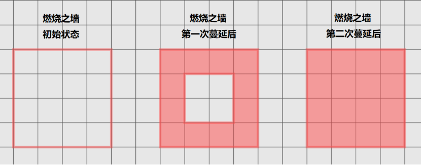

气豚是一种看上去较为可爱的，圆滚滚的空气元素。虽然它们的核心体积不大，但是无时无刻不在进行吸气膨胀、放气收缩的生理运动，让周围的生物和物件都被吹跑。
气豚
小型元素生物（风系），无阵营
AC：14
HP：22（4d6+8）
速度：15尺，飞行30尺（悬浮）
力量14（+2）敏捷18（+4）体质15（+2）智力5（-2）感知3（-4）
状态免疫：倒地、束缚、睡眠
感官：被动察觉6
语言：无
熟练加值：+2
挑战等级：2
特性
【统统吹飞】气豚在自己的回合内，会放气变成小型生物。在自己的回合外，会吸气变成中型生物。当气豚的体型增大时，所有被它撞击到的实体生物，都会朝着远离气豚的方向被击退20尺。范围内未被着装或携带，也未被固定的物件，同样会被击退相同的距离。
【元素本质】气豚无需进食、饮水、呼吸、睡眠。
动作
【凝气刚拳】近战天生武器攻击，命中+6，触及5尺，单一目标。若命中：6（1d4+3）点钝击伤害，目标生物还需要进行一次DC12的体质豁免，豁免失败则在接下来的1分钟内无法呼吸。无法呼吸的生物可以在每个自己的回合结束时重复豁免，豁免失败则恢复呼吸能力。生物若是无法呼吸的时间太久，可能导致窒息。
思念云Thophton
微型元素生物（风系），任意阵营
护甲等级：12
生命值：15（6d4）
速度：0尺，飞行30尺（悬浮）
力量1（-5）敏捷14（+2）体质10（+0）智力3（-4）感知8（-1）
伤害易伤：心灵
伤害免疫：强酸，冷冻，毒素，雷鸣；非魔法的钝击、穿刺、挥砍
伤害抗性：钝击、穿刺、挥砍
状态免疫：目盲，耳聋，力竭，擒抱，麻痹，中毒，倒地，束缚，昏迷
感官：盲视60尺（超过该范围视为目盲），被动察觉9
语言：生前掌握的语言
熟练加值：+2
挑战等级：2
【侦测智能】思念云可以感知并定位其周边300尺内任何智力为3或更高的生物。该侦测可以穿透障碍物，但不能侦测到处于“屏蔽侦测”状态的生物。
【虚体移动】思念云处于虚化状态。如果它在自己的回合结束时仍处在物件内部则受到5（1d10）点力场伤害。
【天生施法】思念云天生施法的关键属性是感知（法术豁免DC 9）。它天生可以施展下列法术而不需要法术成分：
随意：通晓语言、侦测魔法、侦测思想
【已食脑髓】当一只思念云被首次遭遇时，骰一个1d10来确定它已经吞食的记忆数量。思念云每成功吞食过一次记忆，它的智力、感知就加1，至多增加至20。这会导致其天生施法特性的法术豁免DC变化。
【多变照明】思念云可以散发出半径5尺到20尺范围的明亮光照，以及其外同等尺数的微光光照。思念云可以用一个附赠动作来改变其照明范围。
动作
【吞食记忆】思念云选择距离它5尺范围内能看到的一个生物，目标必须进行一次感知豁免，对抗思念云的法术豁免DC，豁免失败则受到10（4d4）点心灵伤害并且失去部分记忆，直到它完成短休或长休、或者从高等复原术greater restoration或医疗术heal中受益为止。智力值为3或更低的生物在豁免中直接成功。
当生物失忆时，目标必须投掷1d4，并在它所做的任何属性检定或攻击检定中减去该数字。之后，每次目标再损失记忆，骰子大小增加一级：d4变成d6、再变成d8，以此类推，直到骰子变成1d20，此时目标陷入昏迷长达1小时。之后效果结束。
当思念云导致目标记忆流失时，它能学习到目标所知道的所有语言，并获得其所有技能熟练。
附赠动作
【显示记忆】思念云展示自己吸收的一部分记忆，引发被吞食者的困惑不安。思念云周围60尺内能看见它且曾被它吞食记忆的生物必须进行一次感知豁免，对抗思念云的法术豁免DC，豁免失败则在其下一回合结束前陷入“困惑术confusion”的效应。
飓风行者
小型元素（风系），绝对中立
AC：46（神速灵敏）或16（没有神速灵敏）
HP：35（10d6）
先攻：+36（神速灵敏）
速度：300尺，飞行300尺（悬浮）
力量7（-2）敏捷23（+6）体质11（+0）智力7（-2）感知9（-1）
豁免：敏捷+36（神速灵敏）
技能：体操+36、巧手+36、隐匿+36（神速灵敏）
伤害免疫：闪电、雷鸣、毒素
状态免疫：中毒、睡眠、擒抱、束缚、倒地
感官：黑暗视觉60尺，被动察觉9
语言：气族语
挑战等级：3
特性
【神速灵敏】飓风行者当前每有10尺移动速度，它的AC、敏捷豁免、敏捷检定就获得+1加值。如果它处于困难地形上，则改为每有20尺移动速度，获得+1加值。
只有真正的、天生的飓风行者，才具有神速灵敏。通过魔法变形或召唤而来的飓风行者，不具有该特性。
【飓风本质】飓风行者无需呼吸、进食、饮水、睡眠。可以穿越任意宽度的缝隙而无需挤身通过，可以与其它生物占据相同的空间。
敌对生物创造出的强风，吹到了飓风行者所在的方格时，该生物与飓风行者进行一次力量检定对抗。若飓风行者获胜，则终止这股强风；若敌对生物获胜，则飓风行者的移动速度降为0，持续到它的下个回合结束。
动作
【风刃袭】飓风行者发射一道宽10尺、长120尺的飓风。区域内的生物进行DC16的敏捷豁免，豁免失败则受到14（4d6）点挥砍伤害，并被击退到飓风的末端。豁免成功则伤害减半，且不会被击退。区域内未被着装或携带的物件，受到等量伤害，其中未被固定的物件也会被击退。
摩艾石像，看起来是竖立在地面上、仅有上半身的石像，它们具有一对长耳，双目深凹，削额高鼻，下巴棱角分明，表情沉毅。但据一些当地居民所说，石像有时会“复活”或是“繁衍出更多个体”。
摩艾石像
大型元素（土系），绝对中立
AC：17（天生护甲）
HP：68（8d10+24）
速度：10尺
力量13（+1）敏捷5（-3）体质16（+3）智力7（-2）感知15（+2）
技能：体质+5
伤害免疫：毒素、心灵
状态免疫：中毒、睡眠、窒息、石化
感官：黑暗视觉60尺，被动察觉9
语言：土族语
挑战等级：3
特性
【元素本质】摩艾石像无需呼吸、进食、饮水、睡眠。
【化为石像】摩艾石像的回合结束时，记录自己的生命值，并转化为一尊静止不动的雕塑。雕塑是大型物件，AC17，HP68，对毒素和心灵伤害具有免疫。每一次转化形成的雕塑，都具有完整的生命值。
摩艾石像的下个回合开始时，如果雕塑未被摧毁，那么它重新变回生物，并将生命值设置为上回合记录的数值；如果雕塑已经被摧毁，摩艾石像会死亡。
动作
【缚地】摩艾石像对300尺内一个它能看见的生物，施加禁锢的魔法。目标陷入缚地状态，持续到摩艾石像的下个回合开始。
【石化】摩艾石像指定60尺内一个它能看见的生物，施加石化的魔法。目标进行DC12的体质豁免，豁免失败则提高一层“石化进度”，最多叠加三层，持续1分钟。任何可以移除“石化”状态的能力，也可以移除“石化进度”。
不同的石化进度带来的影响见下：
·石化进度一层。下半身转化为雕像，陷入束缚状态。
·石化进度二层。除了头部以外的全身转化为雕像，陷入束缚、失能状态。
·石化进度三层。全身转化为雕像，陷入石化状态。如果此状态维持了至少8小时，该生物变为一个新的摩艾石像，游戏数据被取代。“移除诅咒”可以让该生物恢复原型。
燃烧剑士
中型元素（火系），绝对中立
AC：18（天生护甲）
HP：65（10d8+20）
速度：55尺
力量20（+5）敏捷13（+1）体质14（+2）智力15（+2）感知10（+0）
豁免：力量+7，智力+4，感知+2
技能：运动+6
伤害免疫：火焰、毒素
状态免疫：中毒、窒息、睡眠
感官：黑暗视觉60尺，被动察觉10
挑战等级：4
熟练加值：+2
特性
【元素本质】燃烧剑士无需呼吸、进食、饮水、睡眠。
【烈焰之心】燃烧剑士对火焰拥有强大的适应性，产生以下效果：
·燃烧剑士的视野不受火焰阻碍。
·处于火焰方格中时，燃烧剑士的豁免具有优势。
·在火焰方格中受到大于或等于当前生命值的伤害时，燃烧剑士可以让这个方格的火焰熄灭，然后保留1点生命值。
动作
【炽焰巨剑】近战人造武器攻击，触及5尺。命中+7，若命中：12（2d6+5）点挥砍伤害，以及3（1d6）点火焰伤害。如果该次攻击具有优势，额外的火焰伤害改为10（3d6）点。
附赠动作
【燃烧之墙】燃烧剑士挥出火焰，在30尺内的地面上形成一个边长20尺的方形边框。该边框上燃烧着5尺高的、不透明的火焰，持续1分钟或直到被熄灭。
在火焰区域内开始其回合、或是在某个回合中首次进入火焰区域的生物，需要进行DC14的敏捷豁免，豁免失败则受到10（3d6）点火焰伤害，豁免成功则伤害减半。燃烧剑士的每个回合结束时，火焰区域内未被着装或携带的物件，受到等量伤害，可燃物还会被点燃。
燃烧之墙产生的火焰，是非魔法的，可以被多种方法熄灭，例如浇水、造成寒冷伤害、隔绝可燃物、抽走空气等。具体熄灭方法，由DM根据常识判定。
【蔓延】燃烧剑士选择30尺内的一道燃烧之墙，让它的火焰区域向内部方格蔓延一格。

冰元素Ice Elemental
大型元素（水系），绝对中立
AC：17（天生护甲）
HP：102（12d10+36）
速度：50尺，水上行走50尺
力量10（+0）敏捷17（+3）体质16（+3）智力6（-2）感知10（+0）
伤害免疫：寒冷、毒素
伤害易伤：钝击
状态免疫：力竭、石化、中毒、窒息、睡眠
感官：黑暗视觉60尺，被动察觉10
语言：水族语
挑战等级：5
特性
【元素本质】冰元素无需呼吸、进食、饮水、睡眠。
【冰面移动】冰元素移动时可以忽略冰雪形成的困难地形。冰元素移动时可以将脚下的水面冻结为冰面，持续1分钟，让自己能够在水上行走。
动作
【多重攻击】冰元素发动两次触击攻击。
·【触击】近战天生武器攻击：命中+6，触及5尺。若命中：17（2d12+4）点寒冷伤害，并将目标生物或载具减速30尺，持续到目标的下个回合结束。
隐形追猎者是一种从其原生位面召唤而来，并由强大魔法转变而成的气元素。它的唯一目的就是为其召唤者猎杀生物或回收物件。当它被打败或约束它的魔法失效时，隐形追猎者就会化作一阵狂风消失无踪。
制导猎人。隐形追猎者被制造出来时会一直停留在其召唤者身边，直至被其赋予一项任务。如果该任务不涉及猎杀某个特定的生物，或收复某个物件，则创造隐形追猎者的魔法便即时终止，其元素也将被释放。否则，它将前去完成任务，再返回到召唤者处领受更进一步的命令，而这种强制性服务会一直持续到约束它的魔法失效。如果其召唤者在此期间死亡，隐形追猎者在完成其当前任务后便会消失无踪。
隐形追猎者充其量不过是一个不情愿的仆从。它对分配给自己的任何任务都感到厌恶。遇到需要花费大量时间的任务时，如果指派时的措辞不够谨慎，追猎者可能因此主观歪曲该命令的意图。
不可见的威胁。隐形追猎者由空气组成且天生隐形。生物可以听到和感觉到隐形追猎者经过身边，但该元素生物哪怕在攻击时也仍维持隐形状态。可以让人看破隐形的法术也只能揭示隐形追猎者一圈模糊的轮廓。
5z重置了“隐形追猎者Invisible Stalker”，完全取代了DND5e的隐形追猎者。玩家无论是召唤还是变形，都只能获得新版隐形追猎者。
隐形追猎者Invisible Stalker
中型元素生物，绝对中立
护甲等级：15
生命值：104（16d8+32）
速度：65尺，飞行65尺（悬浮）
力量16（+3） 敏捷19（+4） 体质14（+2）智力10（+0） 感知15（+2）
技能：察觉+8，隐匿+10
伤害抗性：非魔法攻击的钝击、穿刺、挥砍
伤害免疫：毒素
状态免疫：力竭、擒抱、麻痹、石化、中毒、倒地、束缚、睡眠
感官：黑暗视觉60尺，被动察觉18
语言：气族语，懂通用语但不能说
挑战等级：6
特性
【隐形】追猎者处于隐形状态。它使用“猛击”不会打破隐形，而做出其它威胁性举动，会导致隐形被压制1分钟。
【完美追踪者】追猎者的召唤者为它定一个猎物。只要追猎者与该猎物身处同一存在位面，它就可以通过预言效果知晓其猎物所在的方位。追猎者同时也知晓其召唤者所在位置。
动作
【多重攻击】追猎者发动两次猛击攻击。
·【猛击】近战天生武器攻击：命中+7，触及5尺。命中：15（2d10+4）点钝击伤害。
岩母的身躯由层层板岩与花岗岩堆叠而成，表面覆着深褐苔藓与蜿蜒的树根，远望如一座缓步移动的小山。每当盟友遇险，岩母便会从地面升起一圈坚实的石壁，来保护他们。
岩母
大型元素（土系），绝对中立
AC：19（天生护甲）
HP：119（14d10+42）
速度：35尺，掘穴35尺
力量12（+1）敏捷10（+0）体质16（+3）智力18（+4）感知10（+0）
技能：体质+6，智力+7
伤害免疫：毒素、心灵
状态免疫：中毒、睡眠、窒息、石化
感官：黑暗视觉60尺，颤动感知60尺
语言：土族语
挑战等级：2（无盟友）或7（有盟友）
特性
【元素本质】岩母无需呼吸、进食、饮水、睡眠。
【岩石圣盾】岩母站在地面上开始自己的回合时，获得“圣盾”。拥有圣盾的生物，对下一次受到的伤害具有免疫，之后圣盾消失。每个生物最多同时拥有一层圣盾。
动作
【地脉联结】岩母指定60尺内一个站在地面上的友方生物，使目标获得“圣盾”。在接下来的一分钟内，每当岩母获得“圣盾”，目标也会获得“圣盾”。
当目标不再站在地面上时，地脉联结会提前终止。当地脉联结终止时，目标的圣盾也会消失。
反应
【创造障壁（充能5~6）】岩母看见60尺内一个拥有“圣盾”的生物受到威胁性举动时，可以用一个反应，移除目标的圣盾，在目标周围创造一道环状的岩石障壁。岩石障壁是一个固定在空间中不动的物件，不透明，体型与目标的体型相同。AC15，HP50。岩母可以随时用意念让岩石障壁崩塌。
只有真正的、天生的岩母才能使用该反应。被变形、召唤而来的岩母，无法使用该反应。
正能量体，又称光明元素。诞生于元素位面与上层位面的交界处，外形是一种洁白的光球。
正能量体
大型元素，绝对中立（50%）或中立善良（50%）
AC：18（天生护甲）
HP：105（7d10+35，生命骰取满）
速度：0尺，飞行50尺（悬浮）
力量14（+2）敏捷14（+2）体质20（+5）智力6（-2）感知22（+6）
伤害吸收：光耀
伤害易伤：暗蚀
伤害免疫：钝击、挥砍、穿刺、毒素
状态免疫：中毒、窒息、睡眠、目盲
感官：盲视60尺，被动察觉16
熟练加值：+3
挑战等级：7
特性
【元素本质】正能量体无需呼吸、进食、饮水、睡眠。
【正能量照明】正能量体的魔法发出半径30尺的明亮照明，和再向外延伸30尺的微光照明。不死生物在明亮照明区域内，进行的攻击检定和属性检定具有劣势。
【正负湮灭】如果正能量体的生命值，因为受到暗蚀伤害而降低到了0，它会立即死亡，并在原地产生一场爆炸。距离它10尺内的生物进行DC16的体质豁免，豁免失败则受到等同于正能量体的最大生命值的光耀伤害，豁免成功则伤害减半。
如果正能量体与负能量体发生了物理接触，它也会死亡，并产生上述爆炸。
动作
【圣疗（35点/日）】正能量体拥有一个治疗能量池，每日可使用35点圣疗点数。正能量体可以用一个动作触碰一个非构装、非不死的生物，并抽取治疗能量池中的能量恢复该生物的生命值，其恢复量最多等于治疗能量池中剩余的治疗量。
此外，正能量体也可以使用5点治疗量治愈目标生物身上的一种疾病，或者祛除一种中毒效应。正能量体可以在一次圣疗中治愈多个疾病并祛除多个毒素，但需要为每一种疾病和毒素分别支付治疗量。
【光能射线】远程法术攻击，射程200尺，命中+9。若命中：35（6d10）点光耀伤害。如果命中了一个生物，目标还需要进行DC17的体质豁免，豁免失败则陷入目盲，持续1分钟。
负能量体，又称黑暗元素。诞生于元素位面与下层位面的交界处，外形是一种漆黑的光球。
负能量体
大型元素，绝对中立（50%）或中立邪恶（50%）
AC：18（天生护甲）
HP：105（7d10+35，生命骰取满）
速度：0尺，飞行50尺（悬浮）
力量14（+2）敏捷14（+2）体质20（+5）智力6（-2）感知22（+6）
伤害吸收：暗蚀
伤害易伤：光耀
伤害免疫：钝击、挥砍、穿刺、毒素
状态免疫：中毒、窒息、睡眠、目盲
感官：盲视60尺，被动察觉16
熟练加值：+3
挑战等级：7
特性
【元素本质】负能量体无需呼吸、进食、饮水、睡眠。
【负能量黑暗】负能量体的魔法产生半径30尺的黑暗，并将再向外延伸30尺区域内的明亮照明降低为微光照明。非构装、非不死的生物在魔法性黑暗区域内，进行的攻击检定和属性检定具有劣势。
【正负湮灭】如果负能量体的生命值，因为受到光耀伤害而降低到了0，它会立即死亡，并在原地产生一场爆炸。距离它10尺内的生物进行DC16的体质豁免，豁免失败则受到等同于负能量体的最大生命值的暗蚀伤害，豁免成功则伤害减半。
如果负能量体与正能量体发生了物理接触，它也会死亡，并产生上述爆炸。
动作
【毒击（35点/日）】负能量体拥有一个毒素能量池，每日可使用35点毒击点数。负能量体可以用一个动作发动一次暗能打击，这次打击命中一名非构装、非不死的生物后，除了正常伤害以外，负能量体还可以抽取毒素能量池中的能量对该生物造成毒素伤害，其伤害总量最多等于你毒素能量池中剩余的伤害量。此外，负能量体也可以使用5点伤害量使目标陷入中毒状态，持续至负能量体的下个回合开始。
【暗能打击】近战法术攻击，触及10尺，命中+9。若命中：35（6d10）点暗蚀伤害。如果命中了一个生物，目标还需要进行DC17的体质豁免，豁免失败则陷入中毒，持续1分钟。